ARTISTS
参加アーティスト一覧
子どもたちが描いた原画をもとに、作品に仕上げているアーティストです（40名）。
-
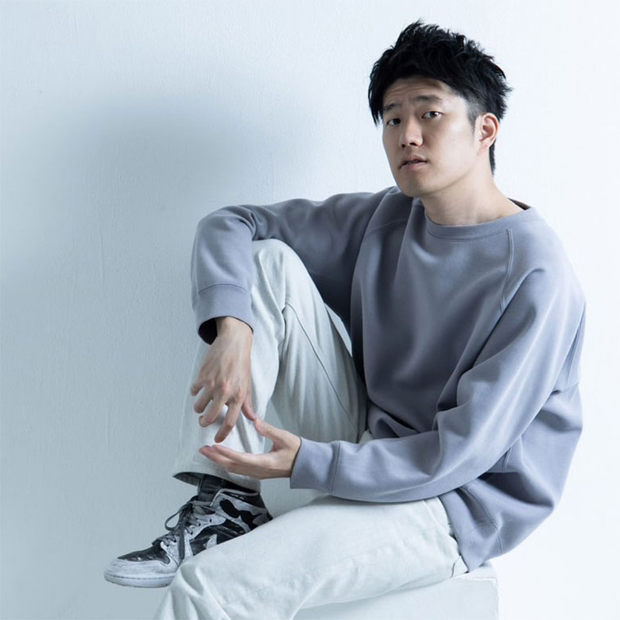
Junpei Hagihara
Contemporary artist
1992年生まれ。20歳から我流で書道を始める。 2019年にフランスのルーヴル美術館に隣接するカルーゼル・デュ・ルーヴルにて開催されたアートフェアに作品を出展し、フランスの有名メディア『Journal Du Japon』にて日本の注目アーティストとして掲載される。同年に開催された東京都港区主催のアートフェスにて集まった1,000作品の中で最高賞である港区長賞を受賞。現在は「文字をベースにした現代アート作品」を国内外で制作。作品の主なコンセプトは 常識/時間/偶発性/余白/侘寂。
-
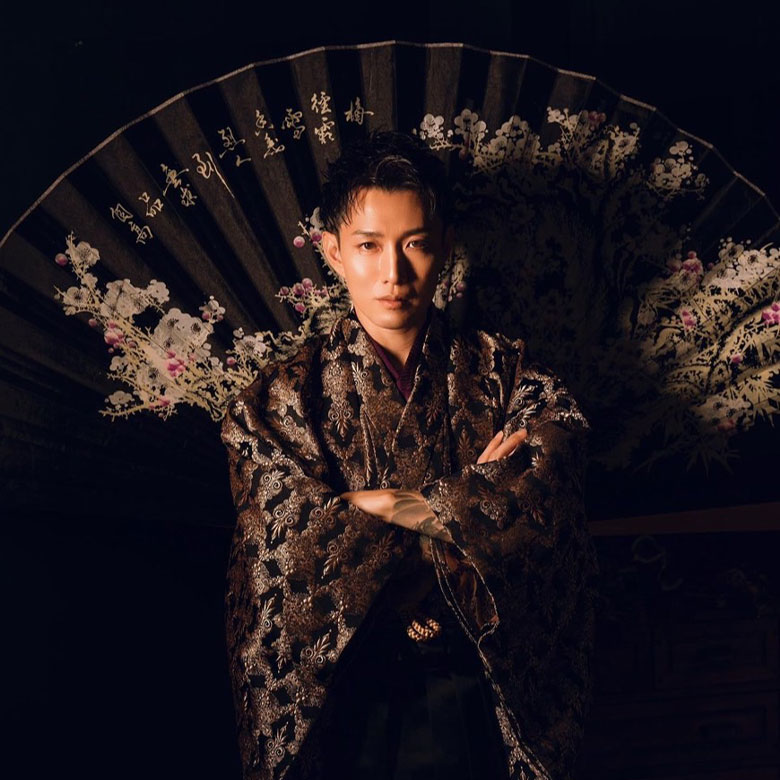
彫師 美漸
Tattoo artist
17歳から彫師を目指し始め、7年の修行ののち「美漸」の名を師匠である「彫ふじ」から授かり独り立ちをする。 伝統的な和彫りから、細く繊細なタトゥーまで、オールジャンルに対応。芸能人、モデル、格闘家、など数多くの著名人のタトゥーを手がけ、また、刺青だけではなく、アパレル販売や、デザイン制作など活動は多岐に渡る。 “Change tattoo”を活動理念に掲げ、これまでのtattooへのネガティブなイメージを払拭するため活動を続けている。
-
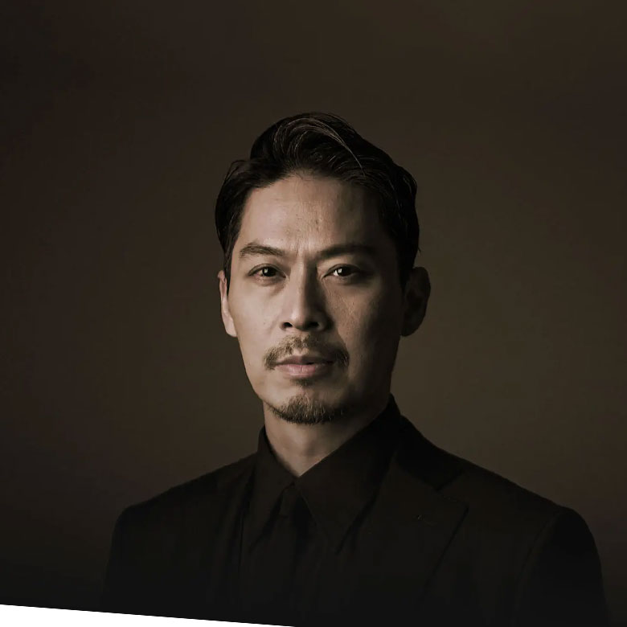
坂東 工
Talent, Artist
日本の俳優、アーティスト、キュレーター。東京都出身。日本大学芸術学部を卒業後、渡米。2007年に帰国。 アメリカでのネイティブアメリカンと共に狩猟や採掘をして生活した体験から、2011年、アート活動を開始。同年、初個展を開催。作品『生きる』が川崎市美術展にて奨励賞を受賞する。 一人一人に備わっている生きる力・エネルギーの螺旋「オーラ」を「あなたのオーラを描きます」というセッション形式で落とし込む、体験型アートを提供している。
-
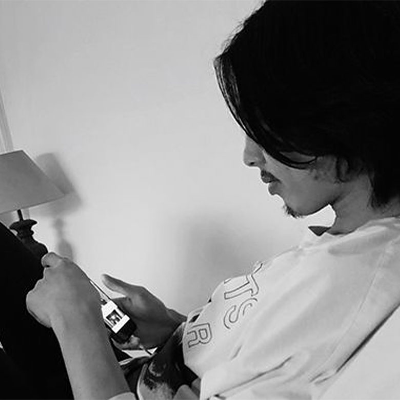
NELL SHIINA
Sculptor
日本とイングランドのアイデンティティを持ち、パリとロンドンを拠点に彫刻と絵画をメインで活動する芸術家。 16歳の時ロンドンにて個展デビュー、ロンドンでファインアートとファッションを学んだ後、パリへ渡り学位を取得、年に数回パリやロンドンで個展を開催。 2021年にTIRED OF LONDON, LTD.を設立。解剖学や哲学を軸に懐疑的なアプローチで物事の実存と不在の境界を表現する。
-
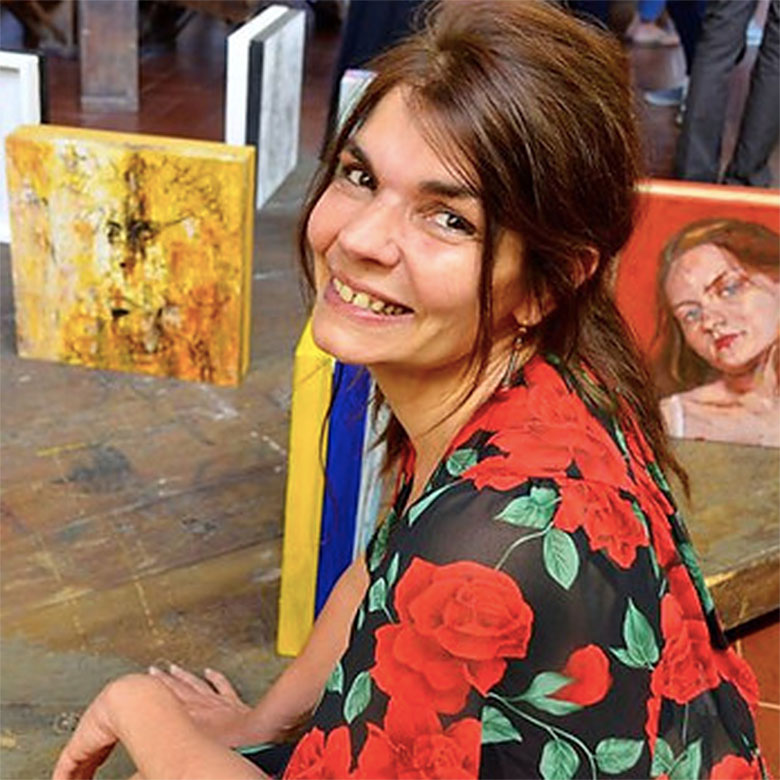
Eve TESORIO
Artist, Decorator, Painter
パリを中心に世界中に作品を発信するフランス人アーティスト。彼女の作品には想像力、創意工夫、批判的思考、空白と退屈、連帯、好奇心と単純さ、混乱など様々な意味合いが含まれています。デッサン、絵画、彫刻、家具など多岐に渡る表現方法で見る者を魅了し続けています。
-
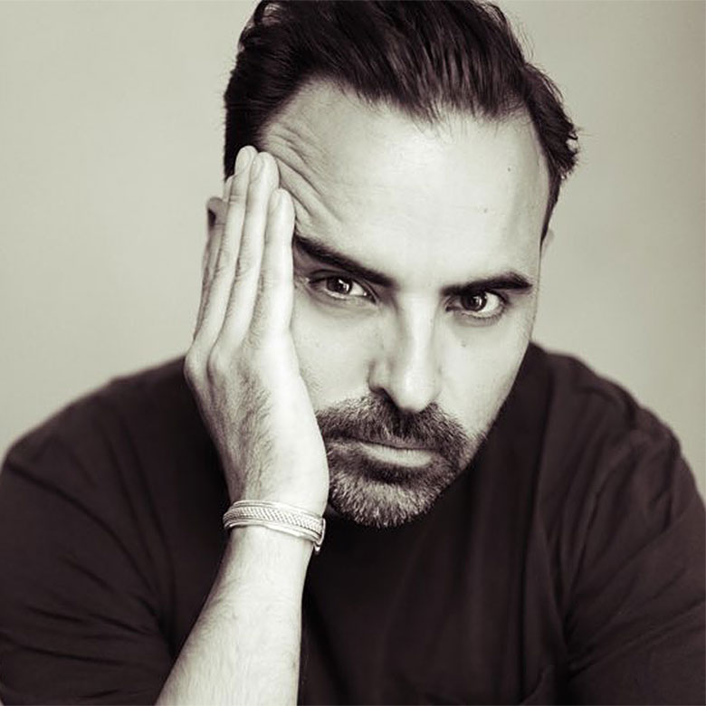
Gabriel Fernandes
Artist
私の名前はガブリエル・フェルナンデスです。私自身を数行で要約しなければならないとしたら、私は芸術に情熱を持っていると言うでしょう。私の最初の出会いは、音楽の第４芸術、特に若い頃に数年間練習したピアノでした。そして、第７の芸術は、私が１２歳のときに私を捉えました…ジャック・ドワイヨンの「若いウェルテル」に出演して、私は信じられないほどの経験をしました、今日でも非常に正確な不変の記憶です…それで！ その瞬間、俳優になりたいと思いました！文学バカロレアを取得した私は、大学で芸術を学び、パリ第８大学で視覚芸術の学位を取得しました。絵画、描画、芸術的パフォーマンスを組み合わせた第３の芸術は、この刺激的な時期の私の日常生活に中断を与えました。 感情、感覚、感性に基づいて創造するこの能力は、今でも私が何をするにも役立っています。
-
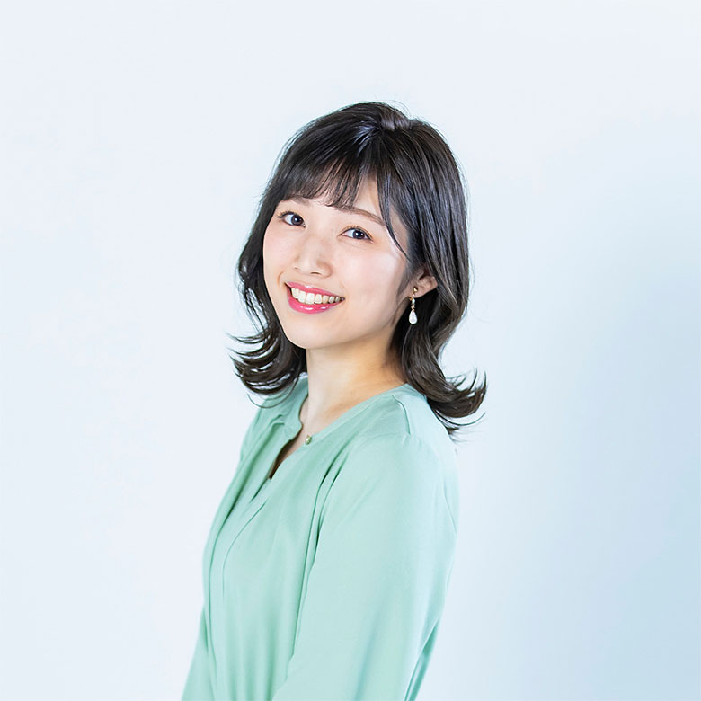
森田 絹子
Announcer
HBCアナウンサー、2017年入社。北海道札幌市出身。今日ドキッ！（月～金午後４時５０分～）メインキャスターを務め、北海道の情報を発信している。趣味は似顔絵。独創的なタッチから「森田画伯」として番組内で紹介されることも。ソロ活が好きで、ランチや映画、カラオケなども一人で楽しむタイプ。好きなものは昼寝とMr.Children、たちポン。
-
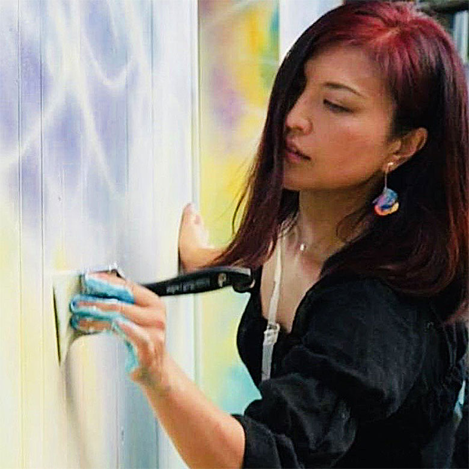
柴田 人蜜
Art activist, Painter
がんや虐待などの経験から生きてることの素晴らしさ“自遊”に表現する楽しさを伝える自己解放ART講座や、一棟丸ごと壁画制作や、Liveペイント出演など国内外で活動。各地児童センター等にて子供たちと自遊を表現するARTワークショップでも活躍中。横浜赤レンガ倉庫開催クリスマスアートコンベンションin yokohama2021にて来場者、審査員の圧倒的支持を得て初出展にしてgrand-prixグランプリ獲得。その他、各展示会にて白鶴賞や千疋屋ギャラリー芸術大賞等を受賞。世界同時ハミングデーを開催するHumming for PEACE創始者ハミングシンガーかくばりゆきえとの歌と絵のユニット「evɘ（イヴ）」としても活躍。
-
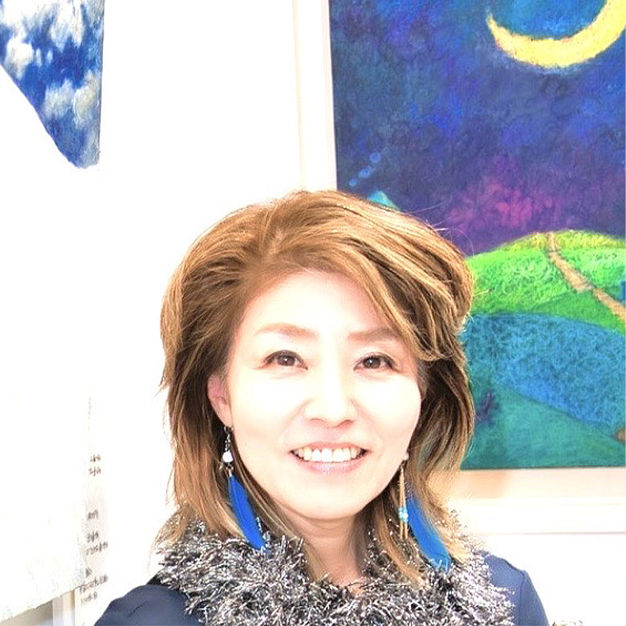
江原 由佳理
Painter, Modeling artist
東京生まれ。玉川大学卒。都内私立中高等学校美術教諭受験絵画、富士通デーサービス美術指導。現アトリエゆう絵画教室代表。幼児から熟年高齢者に向け絵画指導。都内ギャラリーで毎年個展開催、地方公募展、美術展入選、造形作家、ライブペインターとしても活躍中。主に月と生き物の生命力をテーマに作品を創り続けている。2015年に脳出血を発症、手術で脳の一部を失い失語症と右半身麻痺の後遺症と向き合いつつ作家活動を続けている。テレビ、ラジオ出演、講演会、各地でワークショップを開催。2025年5月の鎌倉での個展に向けて作品制作中。
-
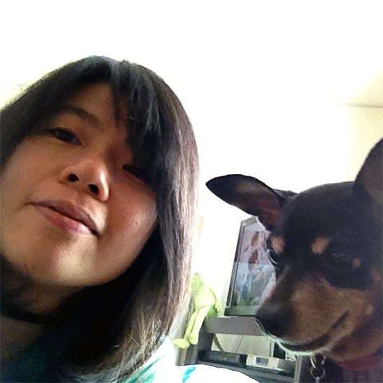
稲垣 晴子
Modern japanese painter
1991年 日展初入選 1992年 武蔵野美術大学大学院日本画コース修了 2023年 個展/うしお画廊 日展
-
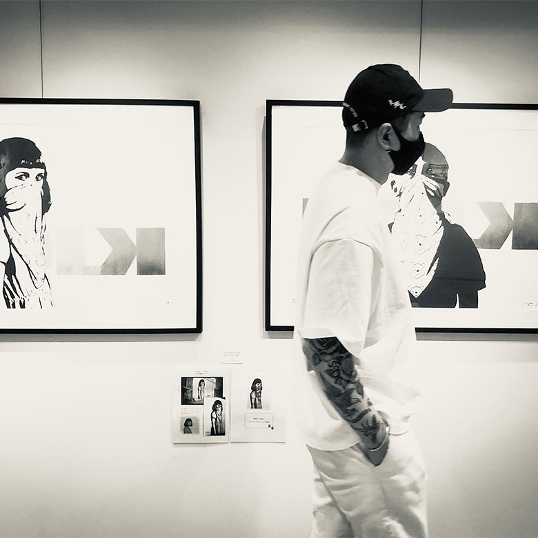
Yasu LEE LOW
Artist, Art director
東京生まれ。 2010年にハワイでストリートアートと出会い、会社経営の傍らアーティストとなる。 パリの展示など趣味の領域を超えて活動している。
-
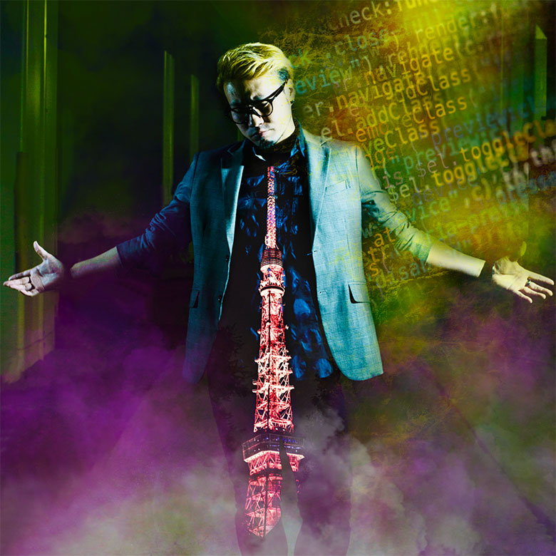
飛太-AlmeriA-
Artist, Illustrator
千葉県柏市出身。小笠原諸島をルーツにもつ。大学卒業後一度は小学校教諭となるも、幼少期より強い憧れを抱いていたアーティストの夢を叶えるため一念発起。いくつかの音楽グループを渡り歩き、現在はジャパニーズカントリーシンガーとして活動している。ソロのシンガー活動の傍、２０２０年コロナ禍において自身のアパレルブランド「AlmeriA」を立ち上げ、イラストレーターとしての活動を開始。２０２１年ソロアルバム「８９１０」を発売し、アルバムのアートワークを自身で手がけたことをきっかけに、現在ではイベントロゴの制作やCDジャケットデザイン、物販Ｔシャツのデザインなども請け負うようになった。カントリーの持つ懐郷感、いわゆる「ノスタルジア」のマインドを、オーソドックスな型に嵌めずに新しい解釈で表現し展開している。
-
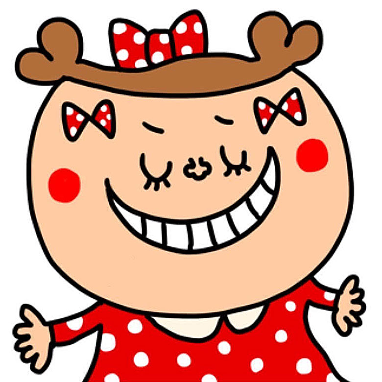
riekim
Illustrator
岐阜県出身。2015年1月よりLINEスタンプ制作をスタート。2017年に角川文庫より発売された『LINE Creators Market公式 トップクリエイター100』 に掲載される。イラストのコンセプトは『かわいく・明るく・楽しいイラスト』会社ロゴデザイン・名刺・チラシなどの仕事依頼を受け、デザイン業をスタート。2022年4月現在、LINE＠登録者数５３万人を突破。LINEスタンプショップのクリエイターランキングでは５０位以内をキープ。最高3位 個別のスタンプランキングでは１位を獲得！（2019年３月）2020年1月度LINEクリエイター絵文字部門MVP獲得！2020年10月「へんてこはっけん！むずむずまちがいさがし」（高橋出版）を出版。
-
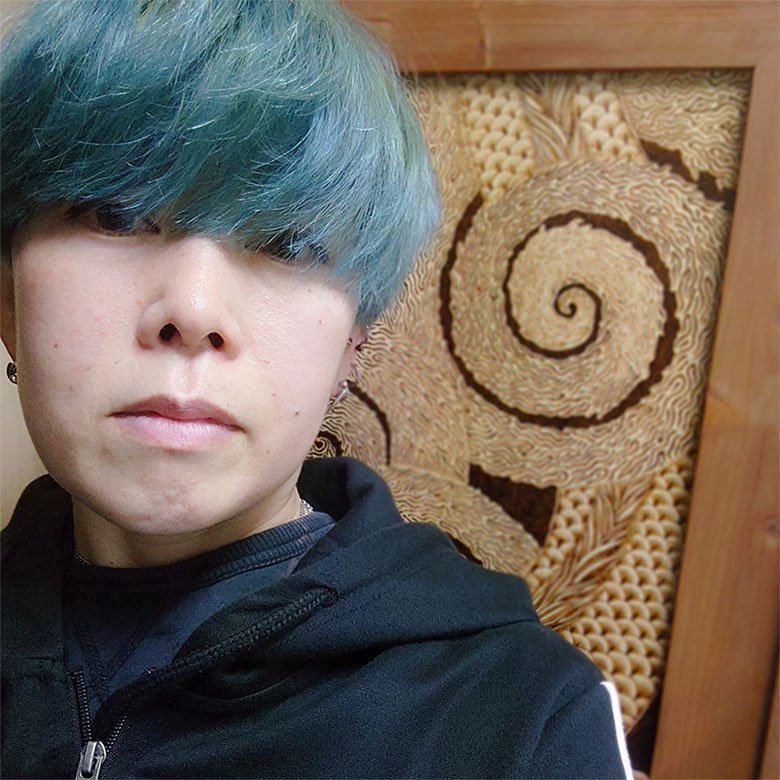
霞楽箱
Pyrography artist
木目と焦げだけで表現される美しい世界に魅せられ、pyrography artistとして活動中。モノノケや妖怪、動物やちょっときもかわなオリジナルキャラが得意。
-
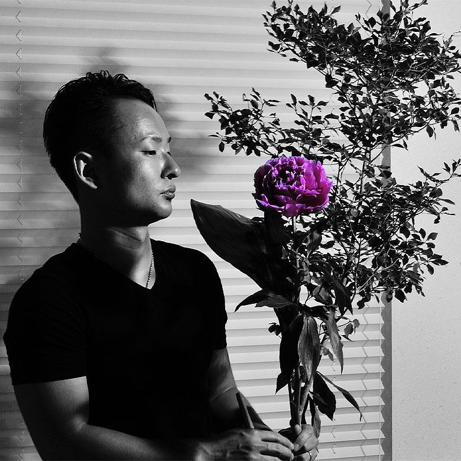
katekin
Contemporary artists
静岡県出身在住。主に墨を使用した細密なドローイング作品や、エポキシ樹脂を利用した造形作品、ドローイングと造形をミックスさせた作品などを制作している。国内外での展示だけでなく、シリコンバレーの企業と業務提携をするなど、新しいアート活動方法の構築を試みている。
-
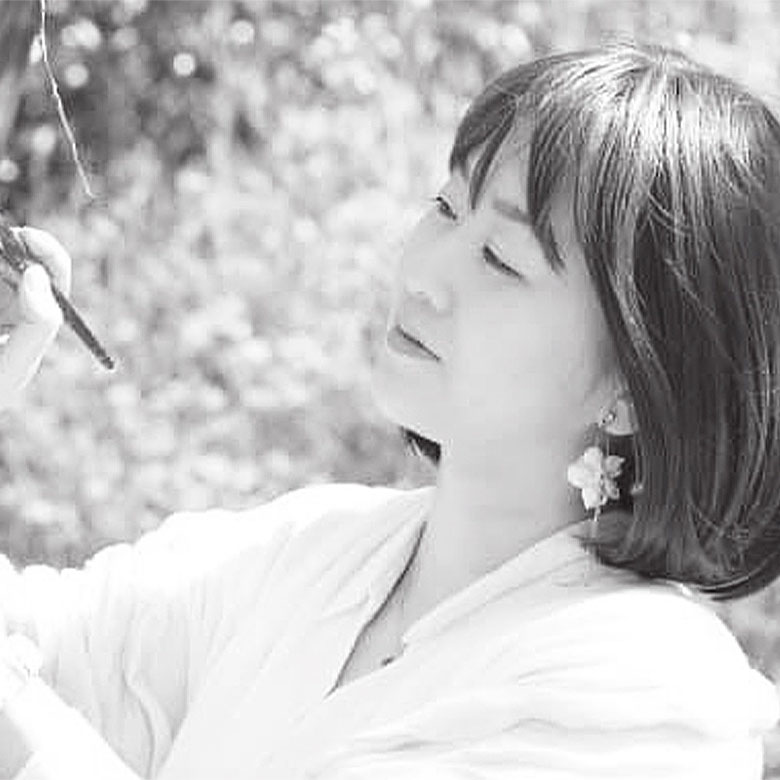
Rin
Nature artist
千葉県流山市出身。自然を愛し、目に見えないものの美しさや光、透明感のある癒しと優しさの世界を表現するアーティスト。2019年公募展で優秀賞、一般投票賞のW受賞、そして「純展」入選を果たし東京都美術館での展示、フランス、アブダビでのグループ展参加と活動を拡げ続けている。現実と非現実世界の狭間の様な、カラフルでやわらかな色彩の世界観は、観る人の心に響く「ヒーリングアート」とも言われている。
-
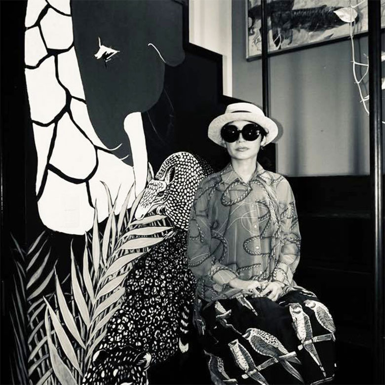
西田ニコラ
Paintings, Drawings
女子美術大学 日本画専攻卒業。2000年栃木県鬼怒川橋橋梁デザイン、コンセプトで環境大臣賞受賞。2017年5月ベルギー国交150周年記念サクラエキシビジョン・ブリュッセルにて日本画展示。2018年日仏国際美術展、サロンブラン優秀賞受賞。2018年〜サロンブラン会員。2019年7月仏国パリ「ギャラリーメタノイヤ」にて日本画展示。2019年9月韓国ソウル「耕仁美術館」にて日本画展示。
-
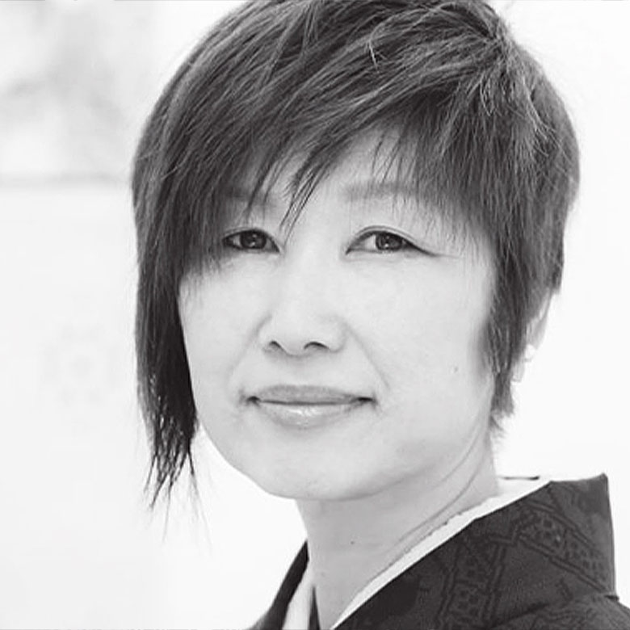
Yumi Kamiya
Kakejiku, Japanese painter
武蔵野美術大学 日本画学科卒業。。2015年に掛軸職人の質の高さに感銘を受け、2016年から全く新しいオリジナル掛軸の制作を開始する。日本画、掛軸、着物といった日本の伝統技術を新しい形で融合させ、日本独自の文化の振興を念頭においたものでもある。2017年「床の間プロジェクト」を提唱し、新インテリア提案であるオリジナル掛軸の普及を目指し、2018年にはパリでの個展を成功させた。
-
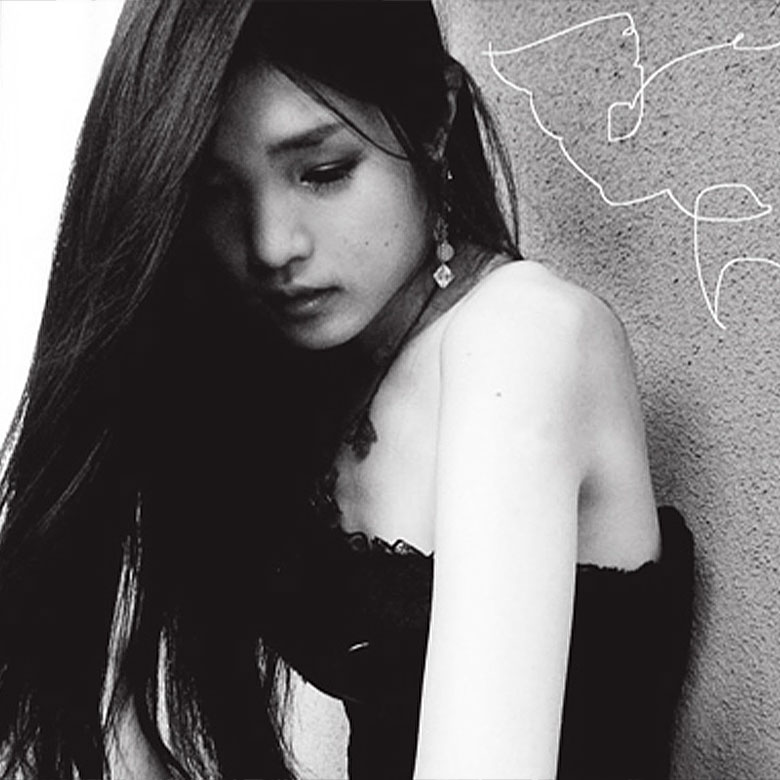
Mika Tamori
Visual Artist
東京、バンコクを拠点とし、2017年から現代アーティストとして活動。 平面の作品の他にインスタレーション、パフォーマンスなど幅広く作品を展開。
-
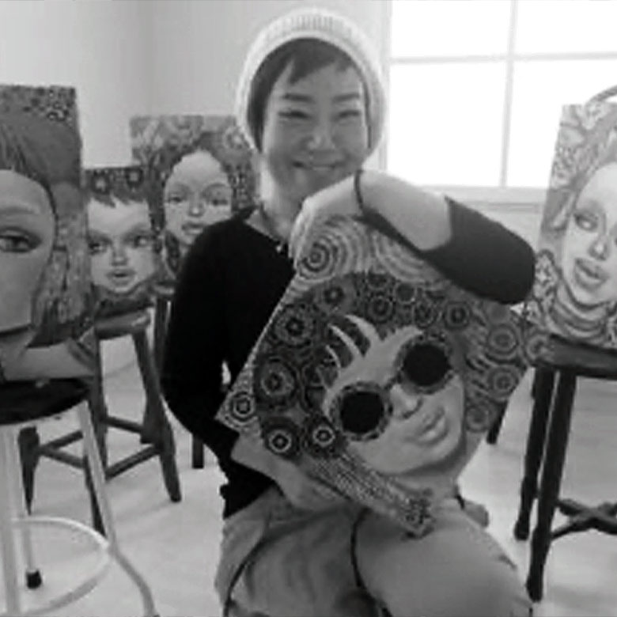
Chiki
Illustrator, Handpaint Artist
埼玉県川口市出身。イラストレーター、韓国芸能記者、美容ライター、学童支援員など、様々な「好奇心の寄り道」を経て、2014年から本格的に活動を再開した異色アーティスト。力強くカラフルな色彩、一度見ると目が離せないその表情、ファンタジーさの中に漂う毒のある世界観で人々を魅了している。
-
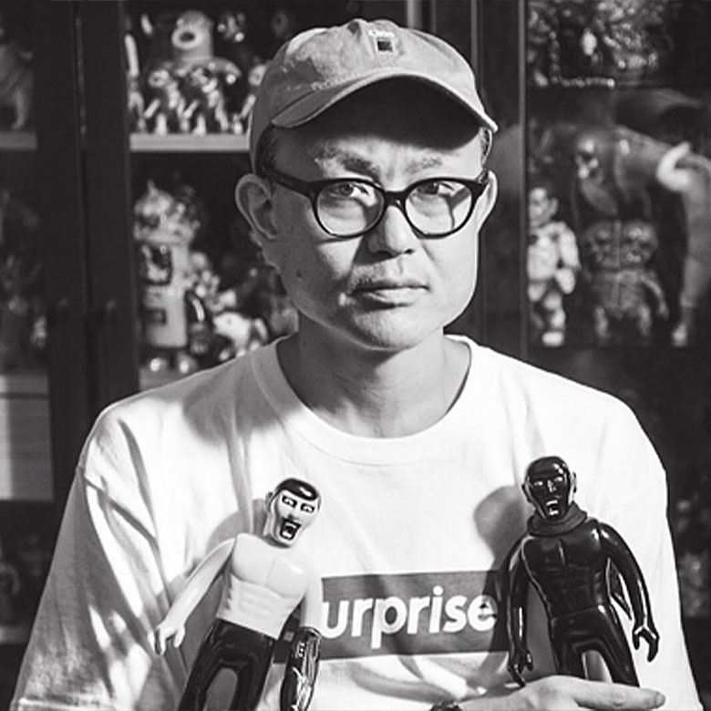
親方 OYAKATA
Designer, Painter
1971年生。空手3段、左きき。1998年、和＋洋＋遊、UNCOOL IS COOLが、基本コンセプトのブランド「PUNK DRUNKERS」設立。アパレルの枠を超えて多ジャンルにデザインを手掛ける。2003年より現在まで展覧会（個展）やライブペインティングも頻繁に開催。また近年、【あいつ】という気になるキャラクターを様々なフィールドで展開中。
-
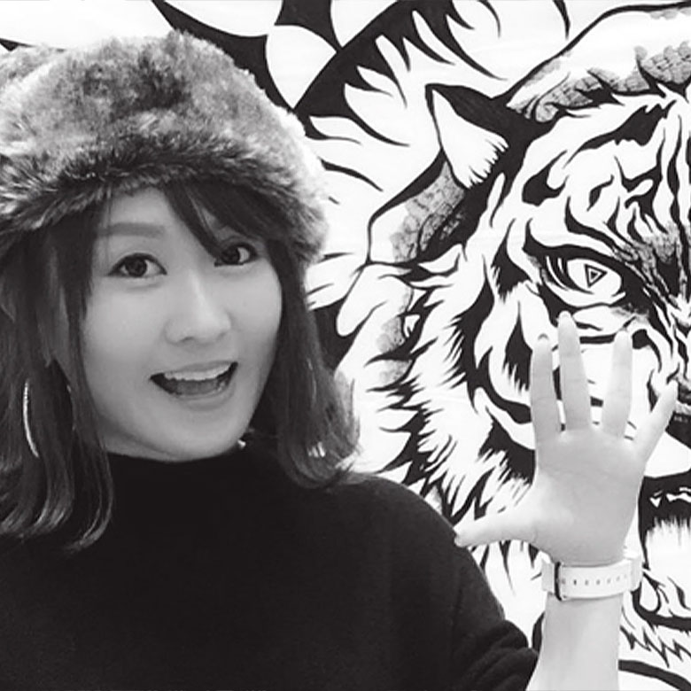
菓 KONOMI
Graphic Artist
札幌出身。嬉しい日も、楽しい日も、心が裂けてしまいそうな哀しい日も「どんな日々も愛おしい」をコンセプトに、日々感じて得た自分なりの哲学をオリジナルのキャラクターと共に表現している。主な仕事に、FUJIROCK FESTIVAL・RISING SUN ROCK FESTIVAL・電気グルーヴなどのグッズデザイン、アパレルブランドとのコラボなどがある。
-
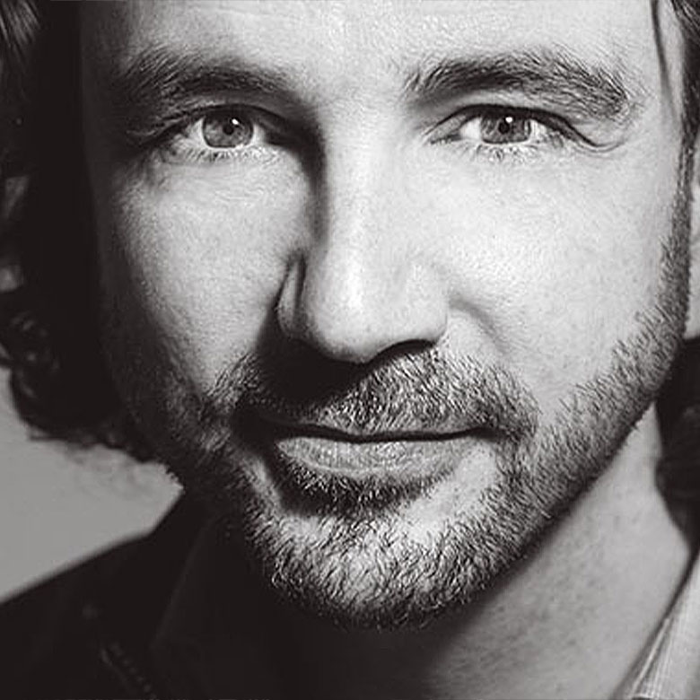
David Twose
Painter
彼の作品は自己を超越する世界を見つけ出し、私達を取り囲む本質に触れる現実に潜む「空想部分」を探し続けている。油彩による彼の技術は観る者に想像力を働かせ、瞑想に近い思考のプロセスを必要とさせる。
-
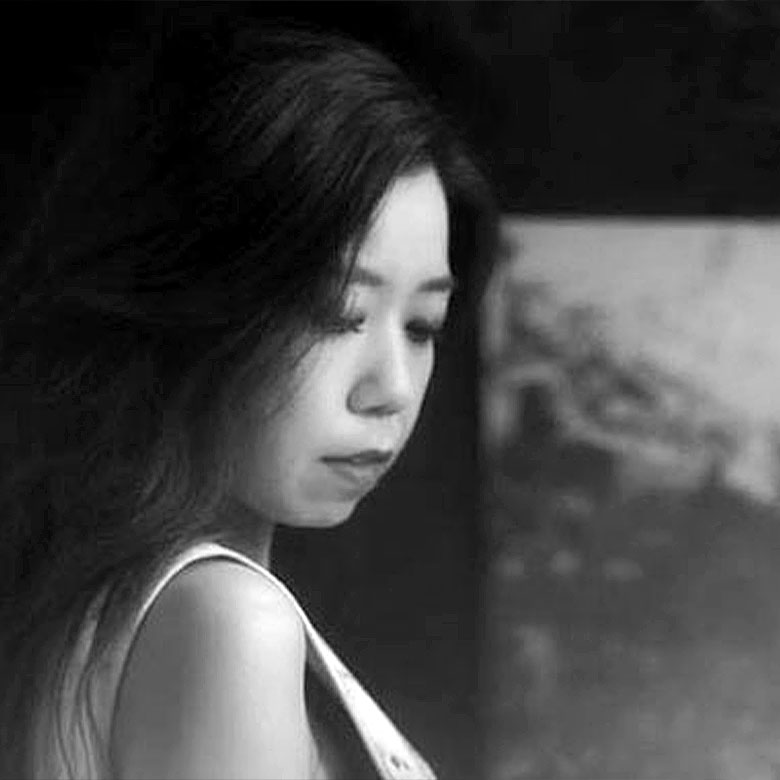
Namiko Miyaki
Mixed media artist
神奈川県出身 岡山県在住 2017年にフローアートと出会い創作活動を始める。2018年ニューヨークにて展示会に参加。初の個展『Hasta mañana またあした展』を開催。その他グループ展多数。フローアートと他の技法を組み合わせプリミティブな表現を生み出し、命の形を描く。止められると張り切る。止められないともっと張り切る。カテゴライズの恐怖から逃避中のミックスドメディアアーティスト。
-
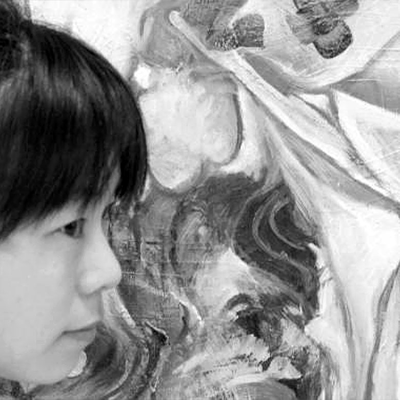
Eri Yamauchi
Painter, Illustrator
福祉職、児童厚生員の職を経験した後、二児を出産。2019年より油彩作品の発表を再開。現在、神奈川県秦野市を拠点に活動中。描くことそのもの、人や命をテーマに、表現の形態を変化させながらがら活動を重ねています。
-
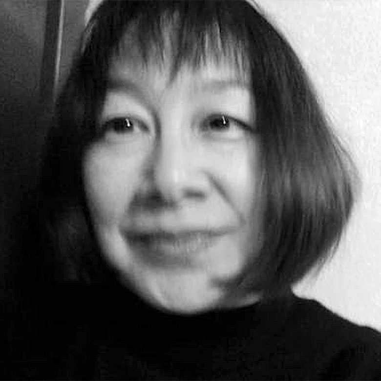
Kyou.
Graphic designer, Illustrator, Painter
1963年6月6日生まれ。愛知県犬山市出身。 グラフィックデザイナー/イラストレーター/画家。 名古屋造形大学在学中よりグラフィックデザイナーとして活動開始。 2017年、台湾で開催された『2018アジアイラスト・アニュアル・アワード』での入選を機に、アーティストとして再起動を決意し現在に至る。 自身の子育てや育児本出版に携わった経験を生かしつつ、子供たちから学んだ純粋な視点で、世の中の美しいものに目を向けて制作を続けている。
-
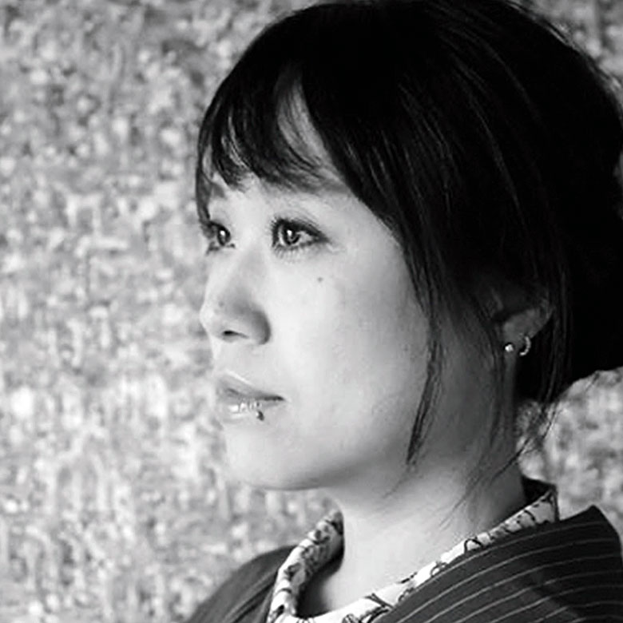
Annco Miura
Painter
静岡県出身。画家、書道家。2010年に渡仏。2011年よりパリ市運営の芸術団体に所 属 し、フランス・イタリア・アメリカでの芸術活動や展示会に参 加する。パリ、東京、名古屋での個展も好評を博す。筆を用い、迷路のような独特の線を用いて「繰り返し」の中に生ずるリアルな呼吸と関係性の変化を描く独自の世界観は、国内外にて多くの人を魅了する。
-
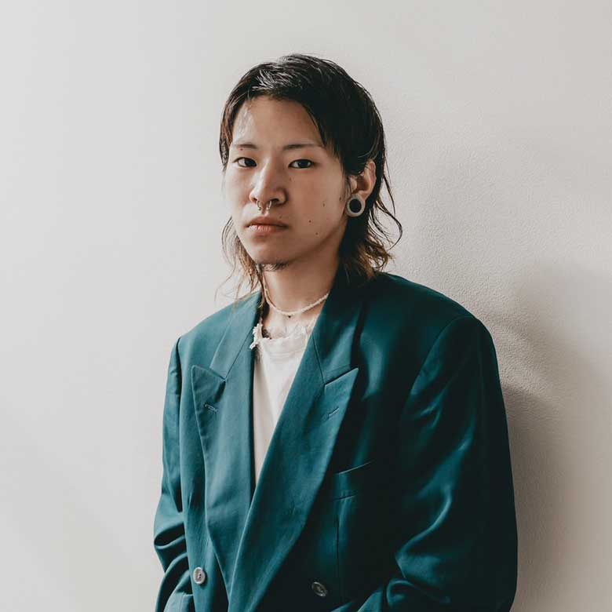
みやしょー
Graffiti artist, Painter
愛知県を拠点に活動するグラフィティアーティスト。シャッターアートやライブペインティングを中心に、古着店などのロゴ制作も手がける。また、バイクビルダーとしての一面も持ち、異なるフィールドで活躍する二刀流アーティスト。
-
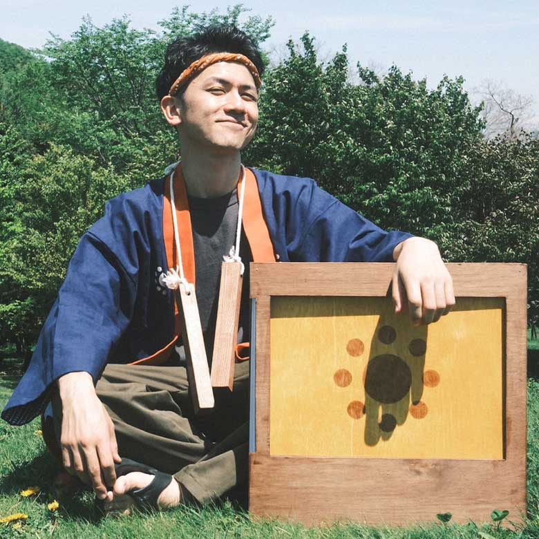
太陽と牛
Picture book artist
北海道札幌市を拠点に活動する絵本画家。児童発達支援でのボランティアをきっかけに絵本画家として活動を開始。高校での絵本監修、就労支援事業所で絵の講師としても活動。
-
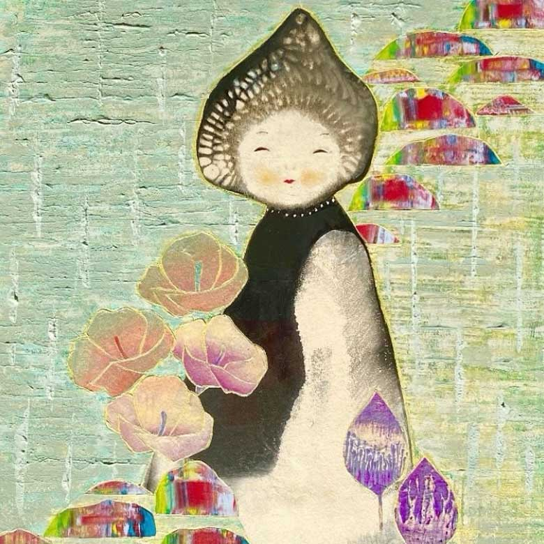
松本みさこ
Japanese painter
岐阜県在住。2011年より国内外で絵画作品を展示発表している。主に墨流しの技法を用いて、墨とアクリル絵の具を融合させたミクストメデァ作品を独自な表現で描く。モチーフは主に動植物等不思議な空間の世界で表現し癒しを与えることを目標にアートが生活の中に溶け込むよう日々作品制作に取り組んでいる。
-
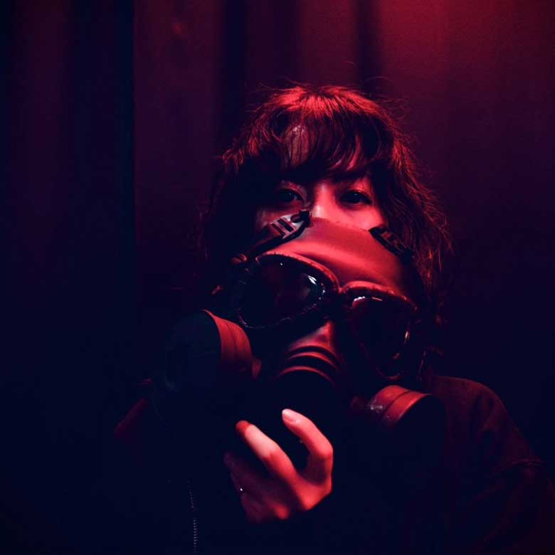
彫師 炉玻 ROJA
Tattoo artist
22歳で彫師の道を志し、地元・青森から全国各地へと旅を重ねながら経験を積む。名古屋での修行を経て東京へ拠点を移し、長年の仲間・美漸と共に「Bizen art tattoo studio」を設立。女性に人気のガールズタトゥーから和彫りまで幅広いジャンルを対応。現在はタトゥーアーティストとしての活動に加え、イラストレーターやデザイナーとしても幅広く活躍する。ロックバンド 10-FEET のツアーグッズデザインや、アニメ「ONE PIECE」公認の描き下ろしデザイン提供など、多方面でその表現力を発揮している。
-
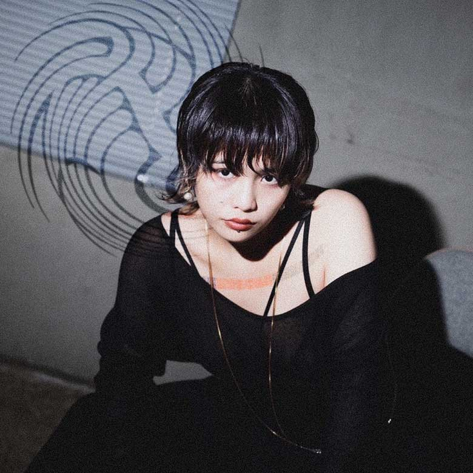
彫師 界螺
Tattoo artist
都立工芸高等学校M科・東京造形大学テキスタイルデザイン先行卒業。2019年、彫師美漸の門下に入る。日本の伝統文様を礎としながらも、螺旋や幾何学的な構成を独自に取り入れることで、重厚かつ現代的なタトゥー表現を追求している。和とモダンを自在に往還し、唯一無二の紋様を描き出す彫師。
-
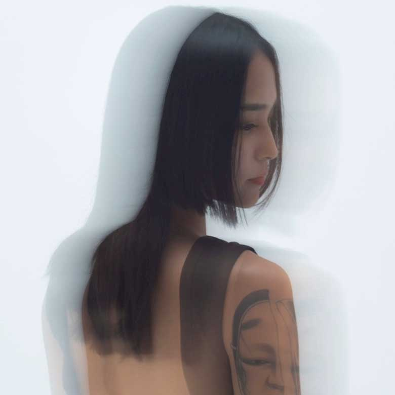
彫師 茉凛灼
Tattoo artist
武蔵野美術大学卒業後、2021年に美漸のもとで彫り師として修業を開始。浮世絵の名匠たちに学び、その形や精神性、物語性を探求しながら、日本美術の魂を現代に受け継ぐ作品を制作。伝統と革新を融合し、時を超えて心に響く美を世界へ届けることを目指している。
-
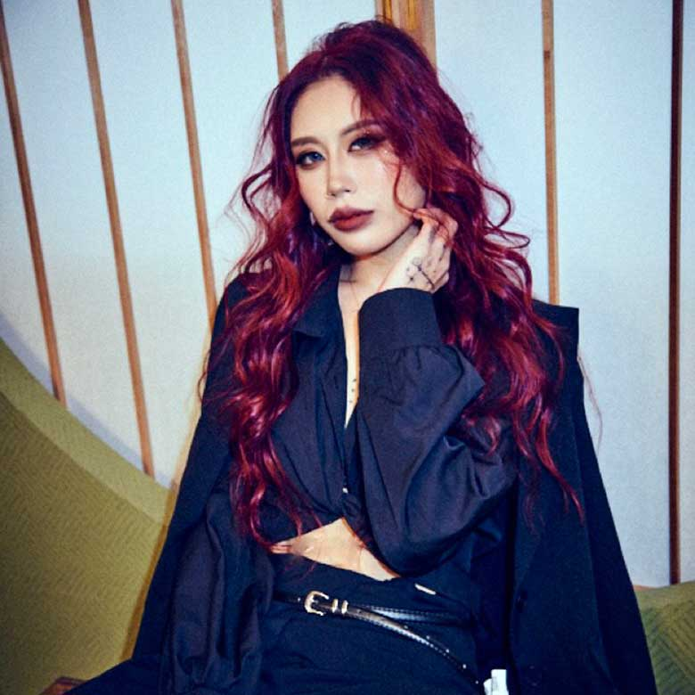
彫師 美嶺
Tattoo artist
彫師美漸の門下に入りプロタトゥーアーティストとして活動。Bizen art second(2号店)の代表を務める。柔らかい毛並みを1本1本繊細なタッチで表現する動物と植物をモチーフとしたタトゥーを得意としている。
-
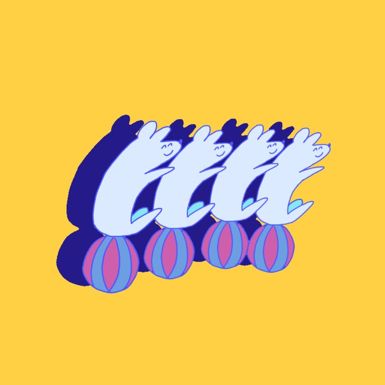
mkrg
Artist, Illustrator
2018年より「mkrg」として活動を開始。インターネットを中心にイラストを発表し、LINEスタンプやグッズの制作・販売を行う。2019年に大阪芸術大学でグループ展、2020年にSUPSTAND FUKUOKAにて個展を開催。現在はバンド活動をメインに行なっているが、自身の世界観を表現する一環としてイラスト制作やビジュアルデザインも手がけている。
-
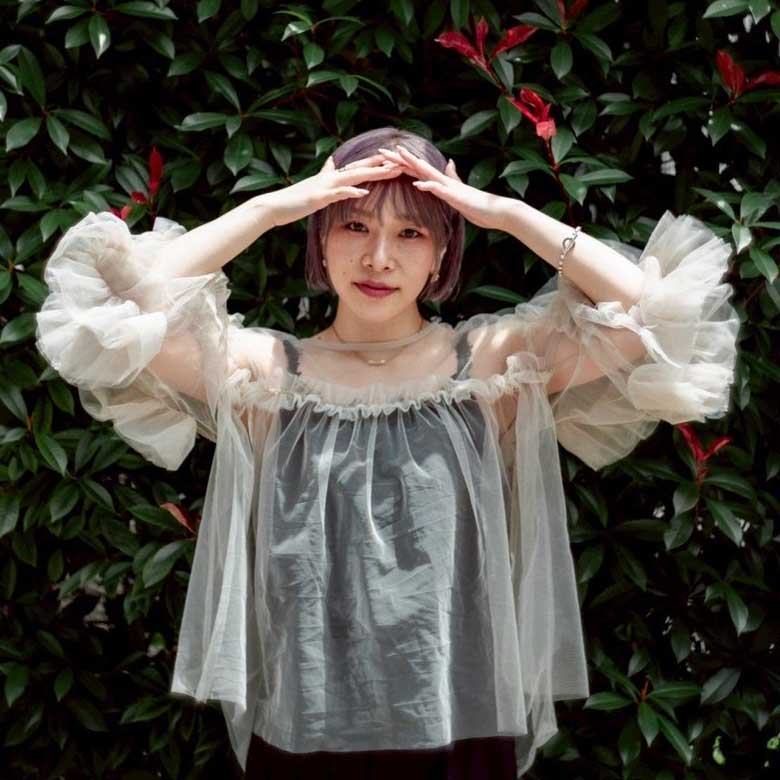
Megumi Matsukawa
Artist
1990年 神奈川県生まれ。青山学院大学社会情報学部卒。 ファッション企業で働きながら2020年から転機を迎え、独学で絵画制作を始める。アルコールインクを用いた鮮やかな色味の作品から始まり、2023年のヨーロッパでの活動を経てミクストメディアによるさらなる制作の探究を行う。
-
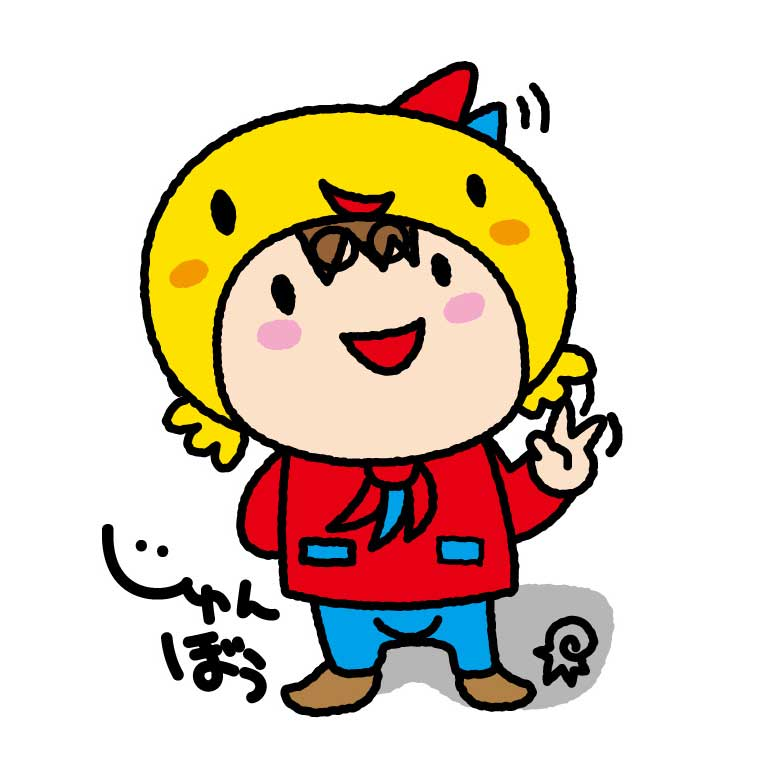
JUNBOw
Illustrator, Designer, Planner
神戸市在住。兵庫県マスコット「はばタン」をはじめ、PiTaPa「ぴたまる」、神戸マラソンロゴなど数多くのデザイン制作及び企画を手掛ける。デジタル・アナログを問わず多彩な作品制作で注目される一方「10％はこどもの笑顔づくり、90％はエロくアホく生きる」を信条に活動。現在は「モリモンスター」をはじめ、様々な企画で各地に笑顔を創出中。
-
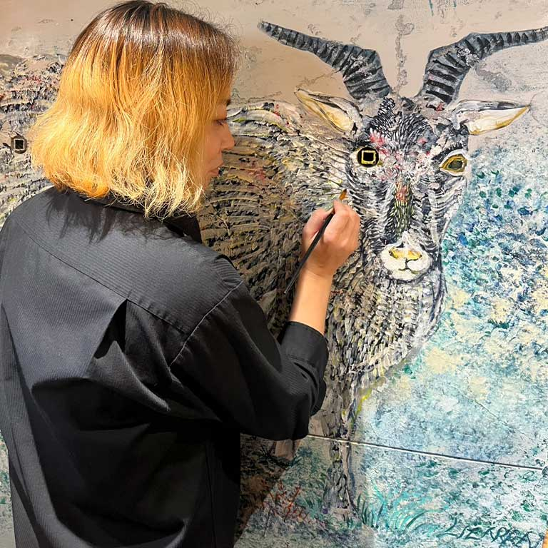
中畑由香里
Mixed Media Mural Art
東京造形大学造形学部美術学科油画専攻卒業。卒業後は展覧会で作品を発表しながら、バーテンダー、テキーラマエストロとしてイベント出演や企画にも携わる。現在は壁画制作を中心に、見る人の気持ちが少し明るくなるような、温かく親しみやすい作品を制作している。
-
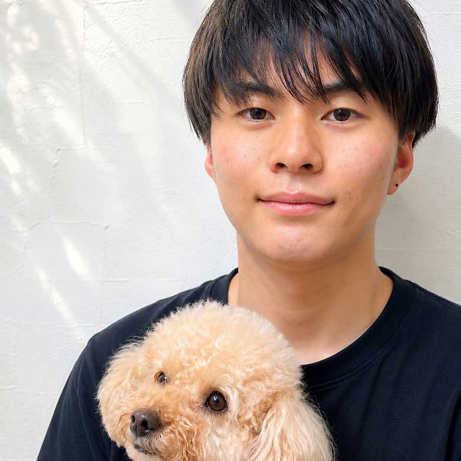
ソウラク
Mixed Media Mural Art
岐阜県出身。幼少期に「ONEART」でけみ芥見さんと、その作品に出会い、その世界観とアート表現に強く惹かれ、影響を受けました。憧れを胸に現在は専門学校でデザインを学びながら、見る人の心に残るアーティストを目指して制作に取り組んでいます。
-
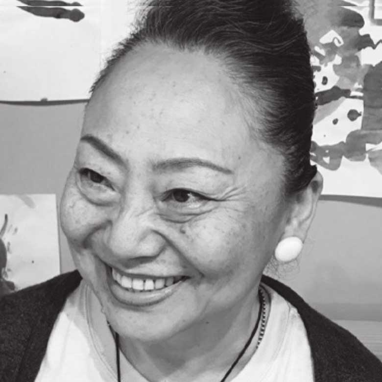
たてうちゆかり
Artist
宝飾業界にてデザイン制作を手掛けるなか、煌びやかなものから鉄錆に引かれ、鉄錆を使った平面作品を制作。時間の許す限り、「江別」「てまりの華」「おむかいさん」「北ひろしま福祉会センタージョブ」「にじのあとりえ」にてアートサポートに入っています。
掲載内容は一般財団法人ゆめいく公式サイトより（ゆめいくの許可を得て転載）。